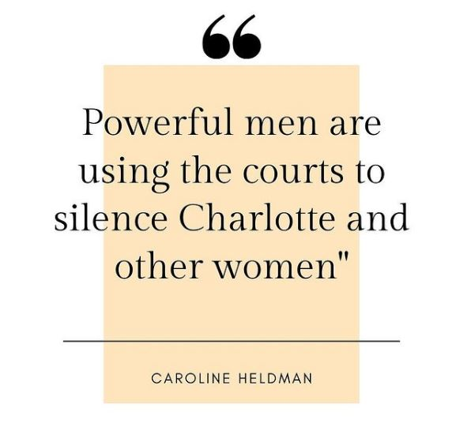

Charlotte Kirk is an actor who was sexually violated by a powerful Hollywood executive and silenced with a coerced non-disclosure agreement.
Read about her story here.
Please amplify this campaign by sharing it with your networks and posting a selfie in a mask with #LetCharlotteSpeak on it. Thank you!